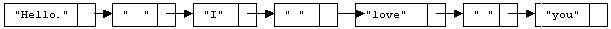

The Text Justification algorithm will ensure that the output from your program is both left and right justified when displayed in a mono-spaced font such as Courier. This paragraph is an example of such justification. All the lines (except the last) of the output from a given run of your program should have the same length, and the last line is to be no longer than the other lines.
This pseudocode illustrates the Text Justification algorithm at a high level and how it should fit in to the Markov Chain programming assignment as a whole. The following sections describe the steps in more detail.
Initialize the Markov data structures;
foreach word in the input
Read the word, add appropriate prefix and/or suffix to the data structures;
while( more words to generate ) {
generate next output word;
if( word is short enough to fit on current output line )
add word and trailing space(s) to the line's linked list;
// Two spaces if it is the end of a sentence. One space otherwise See below.
else {
add enough spaces to justify the line; // details of where to add them are discussed in phase 3
print the line;
clear the linked list;
add the word and its trailing space(s) to the empty linked list;
}
}
if( output line is not empty ) // last output line
print output line;
Construct a linked list (new LinkedList<String>) that represents the current line of output.
For each word in the output, add a node to the end of the list
representing that word, then add another node to the end to signify
the amount of space between that word and the next (initially, this is
one space). You should also keep references these space nodes in an ArrayList, to facilitate fast random access
to those nodes. Whenever
adding a new word would cause the combined length of all the words and
spaces in the list to exceed the line length, stop. Remove the last
node of the list (remember, this is the space that follows the last word on
the line). Then distribute additional spaces among the line's space nodes
(you can choose a reference randomly from the ArrayList mentioned above
and add a space to that node) until the combined length of the words
and spaces in the list is exactly equal to the prescribed line length. Actually,
that is an approximation of what you want to do; you don't want all the spaces to be distributed
completely randomly;
see phase 3 below. Traverse the list, and output each word String and spaces
String in order. Output a newline and reset to a new empty line. When you run
out of words, output whatever is in the list without adding any extra spaces,
then terminate the program.
You are allowed to jump directly to Phase 3 if you wish, but the intermediate approaches may help you to get there a step at a time.
Phase 1. Simply output one word per line. Or perhaps a fixed number (12 will probably work well) of words per line. Then you can debug the Markov Chain parts of your code before worrying about justifying the output.
Phase 2. Don't output each word as you generate it. Instead, add it to a linked list of strings, one node for each word. Keep track of the total width of all of the words in your list (plus the spaces that will separate them when they are printed). When the width exceeds the output width, print all but the last word, and begin a new linked list containing just that last word.
Phase 3. Add (to your linked list of strings) nodes containing the spaces that separate the words (after you add a word to your list, you can add the space(s) that follow it). There will normally be one space, but if the word ends with a period, exclamation point, or question mark, there must be two spaces. For example, if the text in the line so far is "Hello. I love you" The list will look like:
Next, create an ArrayList of N references to the "space nodes" in the list (where N+1 is the number of words on this line). Calculate how many additional spaces (call this number M) must be added to the line in order to obtain a justified line.
The reason for randomly choosing which space nodes to enlarge is to avoid the appearance of more white space on one side of the text than on the other side, which would happen if you always added the spaces in the same places first. Notice that this approach also avoids adding too many spaces in the same place; the number of added spaces in any two space nodes from the same line will either be the same or differ by one.
Once enough spaces have been added, traverse the list and print the strings, including the strings of spaces.
Obviously, you will need to utilize a linked list class to use this algorithm. The specifics of which library class to use are found in the main document.